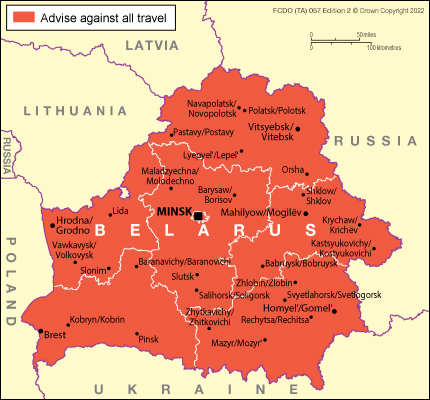

Belarus, officially the Republic of Belarus, is a landlocked country in Eastern Europe. It borders Russia in the east and northeast, Ukraine in the south, Poland in the west, and Lithuania and Latvia in the northwest. Belarus covers an area of 207,600 square kilometers (80,200 sq mi) and has a population of 9.2 million. It is the 13th largest
and 20th most populous country in Europe.
The country has a hemiboreal climate and is administratively divided into six regions.
Minsk is the capital and largest city; it is governed separately as a city with special status.
April 2nd — Union Day of Belarus and Russia
This is an official holiday marking the union of Belarus and Russia. On this day in 1996, the President of Belarus (Alexander Lukashenko) and the then President of Russia (Boris Yeltsin) signed the Treaty on the Formation of the Union of Belarus and Russia in Moscow. A year later, on April 2, 1997, an agreement was reached to create the Union State of Belarus and Russia.
July 6–7: Kupalle (Kupala Night)
This holiday is celebrated throughout the night on July 6th and is accompanied by songs, dances, and traditions such as jumping over fires and night bathing.